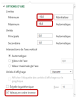
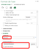

La pyramide des âges
Copier la feuille « salariés » dans un nouveau classeur nommé « pyramideages ».
Question
Afficher, dans une nouvelle feuille de calcul nommée « nbsalparageselonsexe », le nombre de salariés par année d'âge en distinguant les hommes et les femmes :

Question
b) Répéter l'opération pour l'axe secondaire ;
c) « Options d'axe », «Axe Horizontal (valeur), « Options d'axe » :
d) Passer le minimum à -15 et le maximum à 15 puis cocher le dernier item :
e) Répéter l'opération pour l'axe secondaire horizontal, sans cocher Valeurs en ordre inverse :
f) Dans « NOMBRE », renseigner le champ « code de format » comme indiqué, puis "Ajouter":
g) Répéter l'opération pour l'axe inférieur
Résultat :